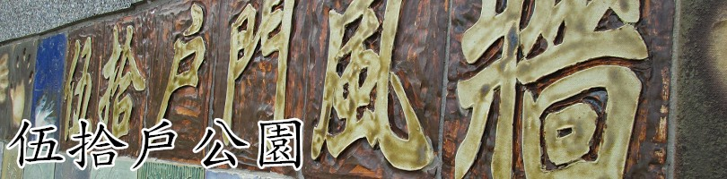
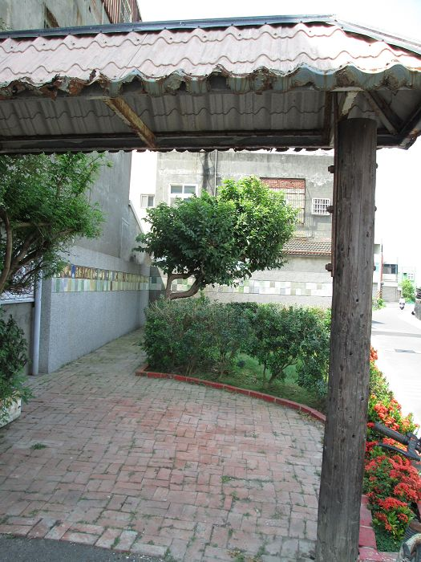
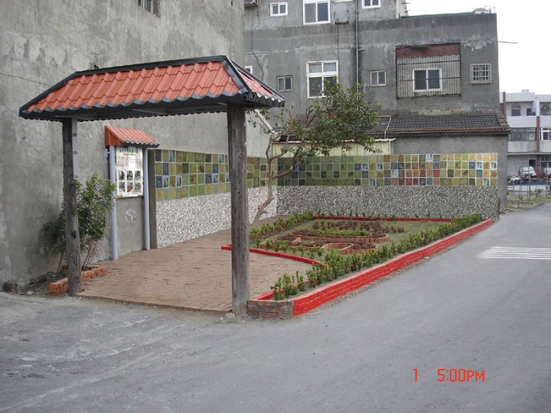

伍拾戶公園計畫緣起： 溝內社區轄區內之「五十戶社區」（社區名稱）已經有２５年歷史，是線西鄉第一個集合式住宅社區，第一代的家長多數以務農維生，生性儉樸，不貪不取，並以此 教育第二代，28年後第一代的長者多已年老，為了表彰他們的作為並藉此將此門風流傳後代，故擬在五十戶社區旁閒置空間設置一門風牆與休憩涼亭以表彰此代門 風並增加社區老人休憩健身場所。

地址:彰化縣線西鄉溝內村沿海路一段595巷
<--回溝內村首頁